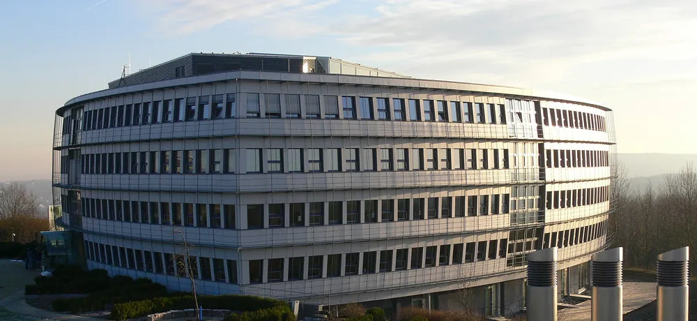

Facility Management · Ulm & Region
Gebäude, die einfach laufen.
Wir übernehmen das komplette Facility Management Ihrer Immobilie – von der Objektbetreuung über Haustechnik und Brandschutz bis zu den Außenanlagen. Ein Ansprechpartner, der vor Ort ist.
- Ein Ansprechpartner
- Vor Ort statt Hotline
- Alles dokumentiert
Leistungen
Komplettes Facility Management aus einer Hand.
- 01
Objektbetreuung
Rundgänge, Kleinreparaturen, Schlüssel und Zugänge.
- 02
Haustechnik & Wartung
Heizung, Lüftung, Sanitär, Elektro – Prüffristen im Blick.
- 03
Brandschutz
Rettungswege, Feuerlöscher, Rauchabzug, Brandmeldeanlage, Begehungen.
- 04
Außenanlagen & Winterdienst
Grünpflege, Wege, Parkflächen, Räum- und Streudienst.
- 05
Reinigung & Fachfirmen
Steuern, kontrollieren, eine Nummer für alles.
- 06
Störungsmanagement
Meldung aufnehmen, beheben lassen, zurückmelden.
Praxisbeispiel
Science Park Ulm.
Am Oberen Eselsberg ist seit den 1980er-Jahren die Wissenschaftsstadt gewachsen: Forschungsinstitute, Labore und Entwicklungszentren namhafter Unternehmen. Hier betreuen wir Objekte im kompletten Facility Management.

- Objektbetreuung & Hausmeisterdienst
- Haustechnik & Wartungsmanagement
- Brandschutz & Prüffristen
- Außenanlagen & Winterdienst
- Steuerung von Reinigung und Fachfirmen
- I–III
- Ausbaustufen
- 600 m
- über dem Meer
- 12.500
- Menschen täglich*
* Angabe der IHK Ulm, Stand 2014
Ablauf
Vier Schritte bis zum ruhigen Betrieb.
Begehung
Technik, Flächen, Prüfpflichten und offene Punkte gemeinsam ansehen.
Objektakte
Anlagen, Fristen und Ansprechpartner an einem Ort dokumentiert.
Laufender Betrieb
Feste Rundgänge, schnelle Reaktion, Fachfirmen im Griff.
Kurzer Bericht
Was erledigt ist, was geplant ist, was ansteht.
Kontakt
Sprechen wir über Ihr Gebäude.
Kurz anrufen oder schreiben – wir schauen uns das Objekt an und machen Ihnen ein klares Angebot.